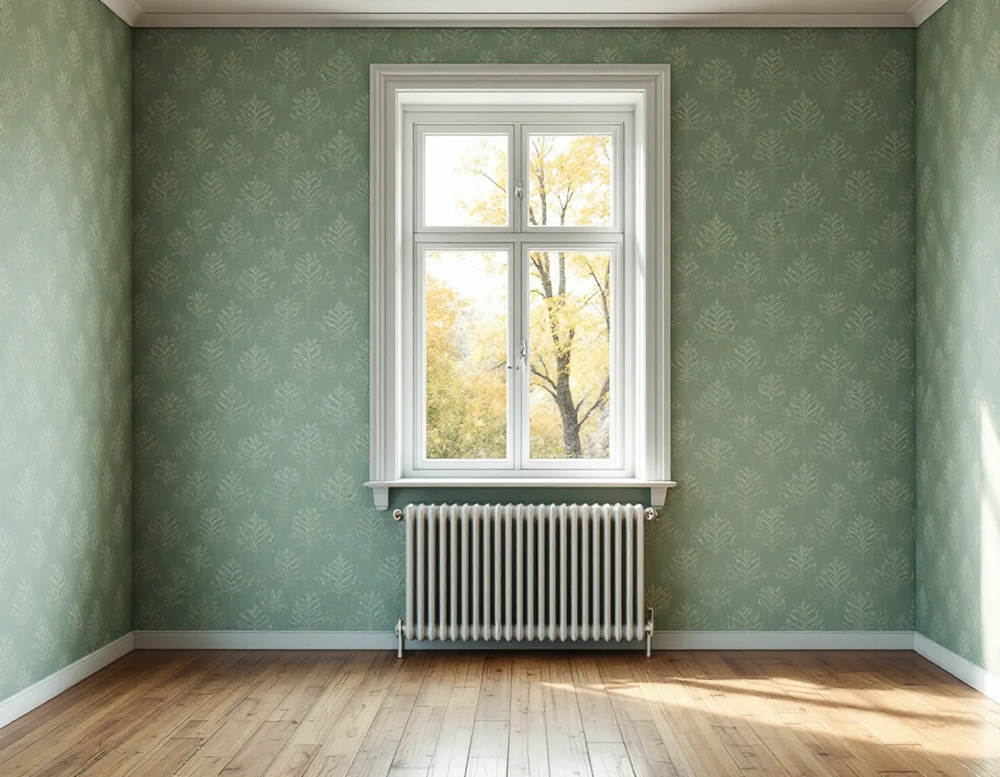
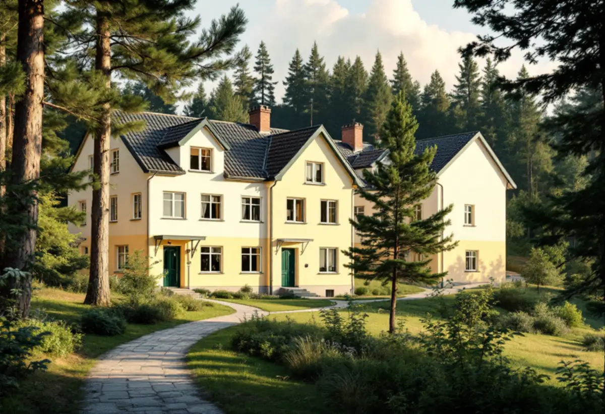

Platsbesök
Gratis besök där vi provar väggarna.
I Hägersten ligger villastaden Mälarhöjden granne med lägenhetsområden som Hägerstensåsen, Västertorp och Fruängen. Väggarna i ett hus från 1920-talet och i en lägenhet från 1960-talet behöver olika underarbete innan tapeten sätts upp. Geal Entreprenad AB tapetserar i villor, radhus och lägenheter i Hägersten och börjar med att ta reda på vad väggen är gjord av.

Stadens vägledning Varsam utveckling av småhus- och villaområden berättar att villasamhällen växte upp i bland annat Mälarhöjden efter privata initiativ genom större markförvärv. Stadens områdesfakta för 2025 räknar 1 086 småhus i Mälarhöjden, varav 988 med äganderätt. Bara drygt 400 bostäder där ligger i flerbostadshus.
I grannstadsdelarna är det tvärtom. Hägerstensåsen har 2 657 hyresrätter hos privata värdar och 2 034 bostadsrätter, men bara 36 småhus med äganderätt. Fruängen har 3 495 bostadsrätter och Västertorp 1 627 bostadsrätter och 1 524 lägenheter i allmännyttan. Vem som får och vill tapetsera, och vem som betalar, skiljer sig därför mycket åt inom samma stadsdelsområde.
Byggnadsvårdsföreningen skriver att dålig vidhäftning kan befaras i hus från 1920–1950-talen, då väggarna underbehandlades med lim och krita, så kallad kridering. Vid mitten av 1950-talet började sandspackel användas som underlag i stället. I en villa i Mälarhöjden från den perioden provar vi därför hur väggen tar emot innan vi sätter upp en ny tapet.
Föreningen skriver också att det oftast går bra att tapetsera på gamla tapeter, men att bronstryck kan slå igenom de nya. Då grundar vi med alkydfärg eller shellack först. Lämpliga underlag i gamla hus är enligt föreningen puts, timmer, spänd papp och spänd väv, och på spänd papp kan det bildas veck i hörnen som efter några år behöver justeras.
Jordabalken ger bostadshyresgäster rätt att på egen bekostnad utföra målning, tapetsering och därmed jämförliga åtgärder i lägenheten. Minskar lägenhetens bruksvärde genom arbetet har hyresvärden rätt till ersättning för skadan. Det betyder att en hyresgäst i Hägerstensåsen eller Västertorp kan tapetsera utan att fråga hyresvärden, men att hyresvärden kan få ersättning om arbetet minskar bruksvärdet.
Rotavdrag får du däremot bara för arbete i en bostad du äger. Hyresgäster betalar alltså hela arbetskostnaden själva. Vi går igenom väggarna, föreslår en tapet som passar rummet och gör underarbetet så att väggen inte skadas.
Byggnadsvårdsföreningen skriver att tapeter kan användas på många underlag, så länge luftfuktigheten inte blir för hög, som den kan bli i kök och badrum. Hög fuktighet i äldre hus och oeldade sommarhus skadar papperstapeter långsamt, vilket syns som lösa skarvar, fuktfläckar och svarta prickar.
Föreningen råder också att man köper en extra rulle av en äldre tapettyp som kan försvinna ur sortimentet, så att den går att laga senare. Vi är noga med underarbetet, eftersom vassa korn och toppar från dålig slipning eller orent klister syns mer genom tapeten än ojämnheter. Mer om tjänsten finns under målare i Hägersten.

Gratis besök där vi provar väggarna.
Mönster, papper eller non-woven och antal rullar.
Gammal tapet, spackling och slipning.
Vid bronstryck eller sugande väggar.
Våd för våd med mönsterpassning.
Lister tillbaka och genomgång.
Skatteverket räknar tapetsering som rotarbete, både i villor och radhus och i bostadsrätter. I en bostadsrätt ska arbetet göras innanför lägenhetens tak, väggar och golv och gälla något du ansvarar för enligt stadgarna. Hyresgäster får inget avdrag, eftersom avdraget gäller bostäder som köparen äger.
Avdraget är högst 30 procent av arbetskostnaden och högst 50 000 kronor per person och år. Tapeter och annat material ger inget avdrag, och Geal drar avdraget direkt på fakturan.
Väggytan, hur mycket gammal tapet och spackel som ska åtgärdas, om väggen behöver grundas, tapetens typ och mönsterpassning och antalet hörn och fönster i rummet. Efter ett gratis platsbesök får du ett skriftligt kostnadsförslag.
Fasad, fönster och invändig målning.
Målare i Stockholm →Takbyte, takbesiktning och plåtarbeten.
Takläggare i Hägersten →Mälarhöjden, Hägerstensåsen och tre epoker av villor.
Takrenovering i Hägersten →Kuperad villastad och vattentryck.
Attefallshus i Hägersten →Bostadsrätten, golvbrunnen och fallet.
Badrumsrenovering i Hägersten →Kuperad tomt, stödmur och dränering.
Byggföretag i Hägersten →Trävillor, färglager och skonsam färgborttagning.
Fasadmålning i Hägersten →Småstugor, typritningar och panel.
Fasadrenovering i Hägersten →Villorna, kartan och spröjsen.
Fönsterbyte i Hägersten →Fönster från olika epoker.
Fönsterrenovering i Hägersten →Golv i källare och suterrängvåning.
Golvläggare i Hägersten →Slipa och spara parketten i en äldre lägenhet.
Golvslipning i Hägersten →Efterkrigstidens lägenheter och asbestprov.
Köksrenovering i Hägersten →Lägenheter, villor vid Mälaren och radhus.
Målare i Hägersten →Låglutande tak och takavvattning i Hägersten.
Plåtslagare i Hägersten →Verandor, dörrar och snickeridetaljer på villan.
Snickare i Hägersten →Samma material eller ett nytt.
Takbyte i Hägersten →Villastad, radhuslänga och brandskydd.
Tillbyggnad i Hägersten →Villan i Mälarhöjden eller lägenheten.
Totalrenovering i Hägersten →